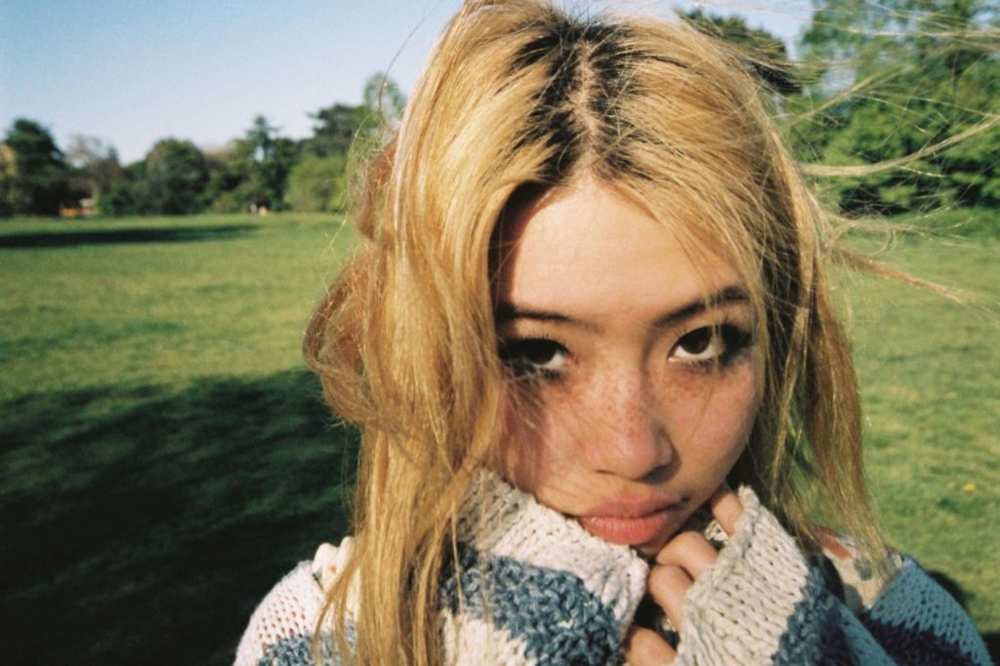

MUSIC
Meet Beabadoobee, the Singer-Songwriter Keeping ’90s Nostalgia Alive
BY LILAH RAMZI
March 11, 2021

Here, we drop into Beabadoobee's London bedroom. See the full story.
Her name is Beatrice Laus, but to her friends it’s “Bea,” and to her fans, “Beabadoobee.”
It’s a peculiar name to say—it takes a few times to get it right—but when you do, it rolls right off the tongue.
What was once a Finstagram handle has now been repurposed into a stage name for the singer-songwriter.
Born in the Philippines, Beabadoobee was raised in London, and that’s where she’s remained for much of the past year, writing songs and doodling on the walls in her childhood bedroom.
“As bad as the pandemic has been—and it’s been really tough—I think it's helped me,” she says.
“I've managed to spend time with my family and spend time with myself.”
Her latest song, “Last Day on Earth,” (out on March 23 and co-written by The 1975’s Matthew Healy and George Daniel) is about all of the things she would have done had she known so much of her life would come to a pause in 2020.
“I was just in my room and then they announced it,” she says, “I could have, you know, gone wild.”
“It's rare that artists can really live in their album, because they just go on tour straight away,” she says.
“That was going to happen with Fake It Flowers, but then I had all this time off to be really grateful for everything that's happened.”
Fake it Flowers was Beabadoobee’s first studio album, released in October of 2020 after several hit-singles—one of which, “Coffee” went full-blown viral on TikTok.
(Now, she has more than 200,000 followers on the platform.)
Anyone listening to the album will instantly pick up on the influence of the ’90s —something between the era’s bubblegum-pop and garage-band sounds.
It’s an aesthetic that would seem nostalgic for some, but to Beabadoobee, who was born in the year 2000, she experienced the genre through her own musical education; one rooted in recordings by Alanis Morissette, The Cranberries, and The Smashing Pumpkins.
A quick glance at her music video for the single “Care” will almost have you thinking it’s an archival clip; she’s really nailed the look.
Tours for the album have, of course, been put on hold, but Beabadoobee has passed the time dancing (“the only sort of exercise I do”), journaling, and watching movies—for the stories but also for the songs.
“My favorite-ever soundtracks are Good Will Hunting, which Elliott Smith did, and *But I'm a Cheerleader—*amazing songs by women,” she gushes.
She’s also been making art and festooning her bedroom walls with watercolors and movie posters she’s picked up on the internet.
“It was nice being able to just sit in my room, chill, and, you know, casually write—not write for anything specific just yet,” she says.
And just for us, ahead of the release of her new single, Beabadoobee does exactly that.
Link to the original article and a video snippet of music she's been working on.